Here suffers Birds Aren't Real, among many more.
At times, the laziness of these shades in terms of checking their work either confused or irritated many who were in search of obscure bits of information. Due to their grammatical errors, these websites failed to convey the full extent of meaning that they intended to due to the careless mistakes of those creating them. Now, these spirits reside in hell with conditions mimicking complete global aphasia, unable to comprehend each other’s speech nor produce comprehensible speech; they are unable to convey their ideas in death, just like in life. They are now forced to bottle themselves up to the world since they may no longer have meaningful conversations. In addition, to prevent visual communication, this layer is almost pitch black, rendering the shades completely blind.